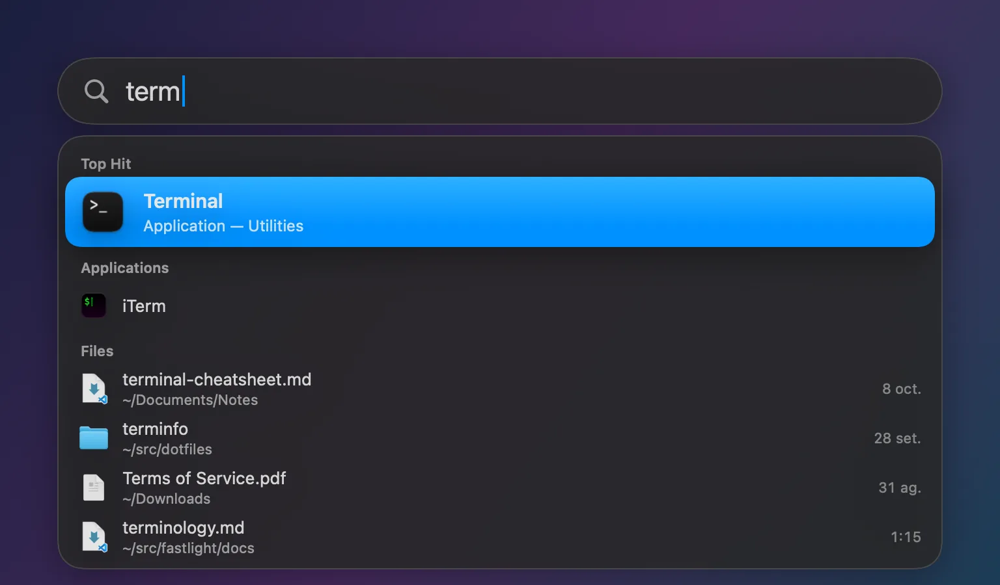
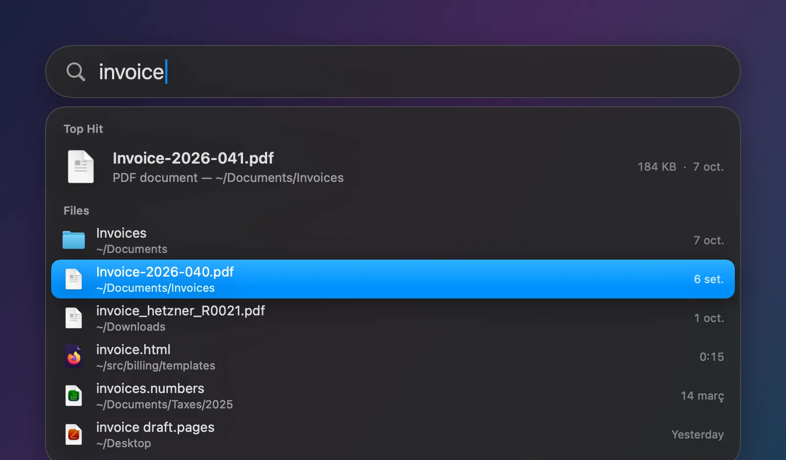
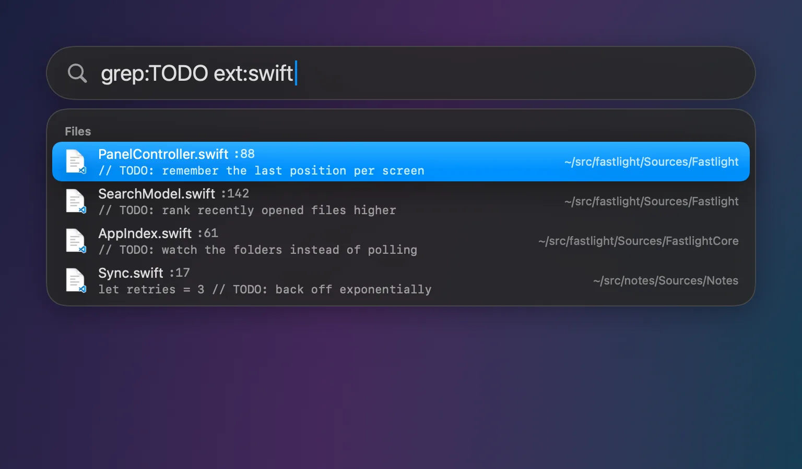
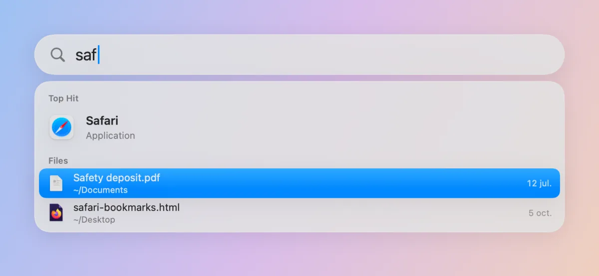
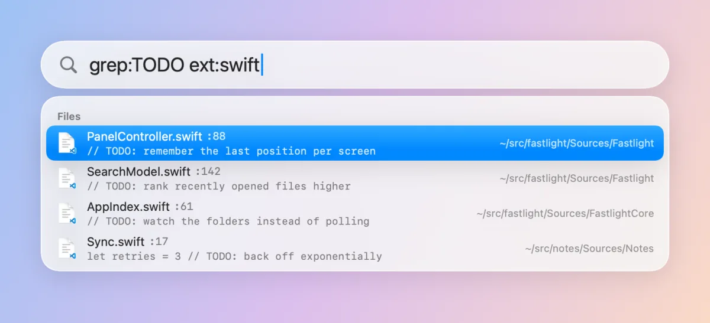
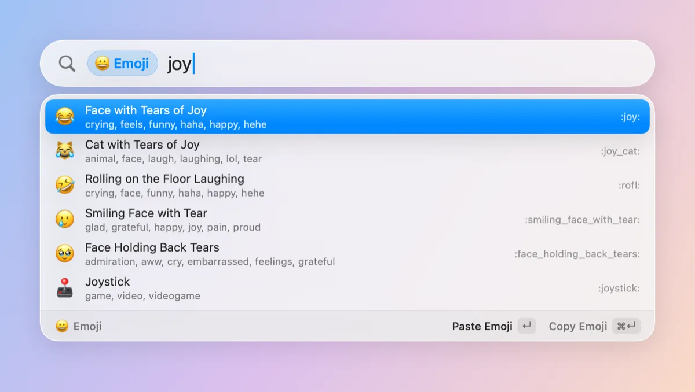
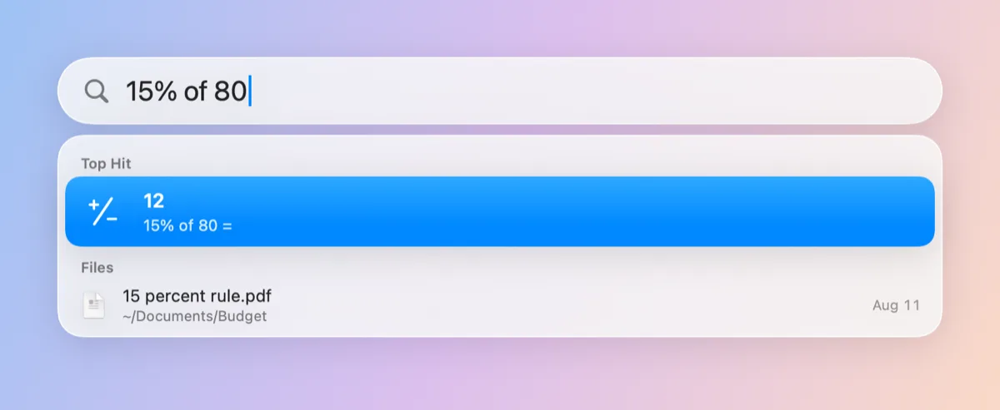
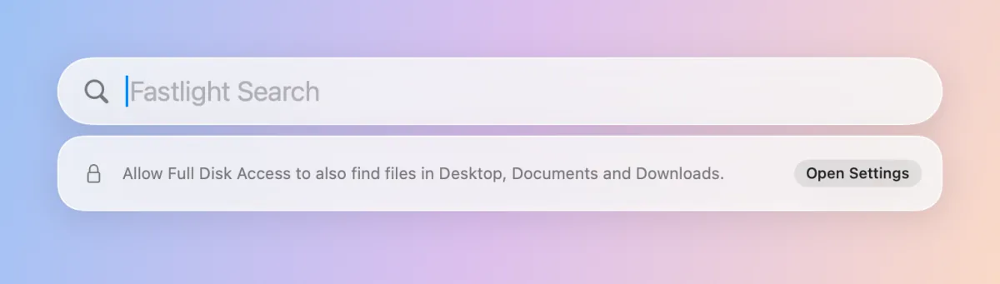
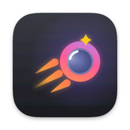

Find anything on your Mac before you finish typing.
Fastlight is a free, open-source launcher for macOS. Press ⌥Space, type a few letters, and it finds your apps and every file on the disk in about a millisecond.
Free and open source · macOS 14 or later · No account, no network



Millions of files. About a millisecond.
Fastlight ships fsearch, a whole-disk index that crawls once, then follows every change through FSEvents. Typing never waits on the disk.
| Find a file by name, whole disk | 1.3 ms |
|---|---|
| Search inside files | 9 ms |
| A new, renamed or deleted file shows up | ~0.1 s |
| First crawl of the disk, once | ~20 s |
Median (p50) times. Your Mac and your disk will differ.
- Forgives typos
- Words are fuzzy, and words of five letters or more survive one typo:
mian.rsstill findsmain.rs. - Reads inside files
- A trigram index of your text files makes
grep:instant. Matches are read fresh from disk, so they are never stale. - Whole disk, not a guess
- Every folder you give it access to, not a curated subset. With Full Disk Access that includes Desktop, Documents and Mail.
Apps first. Files right after.
Results arrive in sections, so launching an app never means wading through files, and finding a file never means scrolling past apps.
- Top Hit is what ↵ opens.
- Applications, with their real icons, from
/Applications,/System/Applicationsand~/Applications. Ranked by how well the name matches and how often you open them, sovscfinds Visual Studio Code. - Files from everywhere else. Plain queries leave out app bundles, dot-folders and
~/Library; any filter brings them back.

Say exactly what you mean.
The search field speaks fsearch’s query language. Plain words for everyday use; filters when you know what you are after.
-
invoice ext:pdf mtime:<30dPDFs named like “invoice”, changed in the last 30 days.
-
readme in:~/srcEvery readme under
~/src, and nowhere else. -
grep:TODO ext:swiftSwift files that contain “TODO”, with the matching line.

Operators
'exact- No fuzziness
^prefix- Name starts with
suffix$- Name ends with
!word- Leave out paths with it in the name or a folder:
!node_modules. Works with',^and$too "two words"- Quotes keep spaces in one word or value:
in:"~/My Notes" folder/name- Words can match folders on the path too, as long as one is in the name:
src readmeorsrc/readme
Filters
ext:- Extension; commas for several:
ext:jpg,png type:image,video,audio,doc,code,archive,fontorappkind:file(f),dir(folder,d) orlink(symlink,l)in:- Under a folder, absolute or
~:in:~/src size:size:>5mb,size:1m..10mmtime:- Modified:
mtime:<7dwithin a week,mtime:>1yover a year ago. Alsomodified: re:- Regex over the name, ignoring case:
re:^IMG_\d+ path:- Regex over the full path, ignoring case
grep:- Text inside files, smart-case. Also
content: regex:- Regex inside files, smart-case
sym:- Where a symbol is defined. Also
symbol:
Values
> < ..- More than, less than, between (
>=and<=too);size:takes an exact value too sizeb,kb,mb,gb,tb(ork,m,g,t); 1 kb is 1000 bytes, bytes if left outmtimes,m/min,h,d,w,mo,y; days if left out
Matching ignores case, except sym: and grep: or regex: patterns with capitals.
Make it yours.
Extensions add their own results, through a keyword or in their own section of the normal results.
- Emoji — type : then a name (
:joy,:tada:); ↵ pastes it where you were typing. - Calculator — type math (
1920*1080,15% of 80) and the answer is the Top Hit, or start with =; ↵ copies it. - Dictionary — type
defineand a word for its definitions, from the dictionaries built into macOS; ↵ opens Dictionary. - Web — type an address (
github.com) and ↵ opens it, orweband anything to search in your browser. - Your own — any language: a folder with an
extension.jsonand a script that speaks JSON lines.
{
"id": "com.example.bc",
"name": "bc",
"version": "1.0.0",
"keywords": ["bc"],
"command": ["/bin/sh", "bc.sh"]
}

Hands stay on the keyboard.
Fastlight lives in the menu bar and waits for ⌥Space, or any shortcut you pick in Settings. Everything after that is a key away.
| Keys | Does |
|---|---|
| ⌥Space | Show or hide Fastlight |
| ↑↓ | Move through results |
| Tab / ⇧Tab | Next or previous section (also ⌘↓ ⌘↑) |
| ↵ | Open (on an extension result, its main action, like Paste) |
| ⌘↵ | Show in Finder (on an extension result, its second action, like Copy) |
| ⌘Y | Quick Look |
| ⌥⌘C | Copy the path |
| : / = | Emoji picker / calculator |
| ⌫ | On an empty field, leave an extension |
| ⎋ | Clear the query, then close |
Installed in a minute.
One app, fsearch included. Nothing to brew, no daemon to set up, no account.
-
Download the DMG
Get
Fastlight-<version>.dmgfrom the latest release and open it. -
Drag it to Applications
Drop Fastlight onto the Applications folder in the DMG window, then open it from there.
-
Click “Open Anyway” if asked
Builds that aren’t notarized are blocked the first time. Go to System Settings → Privacy & Security and click Open Anyway.
-
Grant Full Disk Access
Add Fastlight under System Settings → Privacy & Security → Full Disk Access, so Desktop, Documents and Downloads get indexed too.

Questions
Does anything leave my Mac?
No. The index, the queries and the results stay on your Mac. Fastlight and fsearch talk over a local socket in ~/Library/Application Support/FSearch; there is no account, no analytics and no network access. Extensions you install can do whatever their code does; the built-in extensions never use the network (web search opens your browser).
Why does it need Full Disk Access?
macOS protects folders like Desktop, Documents, Downloads and Mail. Without the grant, fsearch quietly skips them instead of popping a prompt for each one, so those files never show up. The grant only lets Fastlight read file names and text on your own disk.
You can grant it before or after the first launch: if the search daemon started without access, Fastlight restarts it as soon as it has the grant, and it rescans. If files still don't show up, run tccutil reset SystemPolicyAllFiles com.elboletaire.fastlight and pkill -f 'fsearch serve', add Fastlight to Full Disk Access again and reopen it.
How is it different from Spotlight?
Spotlight relies on metadata importers and decides what is worth indexing; Fastlight indexes every file name it can reach and answers fuzzy, typo-tolerant queries in about a millisecond. It keeps apps and files in separate sections and adds a query language with filters such as in:, mtime: and grep:. It doesn’t replace Spotlight, so you can keep both.
Can I extend it?
Yes: an extension is a folder with an extension.json and a program in any language that answers JSON lines. Drop it in ~/Library/Application Support/Fastlight/Extensions/. The emoji picker, calculator, dictionary and web search are built the same way and come with the app. Read the extension guide.
Are extensions safe?
Fastlight asks before running a new extension and again whenever its files change. An approved extension runs with Fastlight’s permissions, which can include Full Disk Access, and isn’t sandboxed, so only install extensions you trust. Turn them off any time from the menu-bar icon › Extensions. The built-in ones are part of the app.
Can it open with ⌘Space instead of Spotlight?
Yes. Open Settings from Fastlight’s menu bar icon. It takes you to the Keyboard Shortcuts setting where you turn off Spotlight’s shortcut, and switches to ⌘Space as soon as it’s free. An experimental button can do it for you and put it back later. Spotlight itself stays on either way, so Finder and Mail search keep working.
What do I need to run it?
macOS 14 Sonoma or later. On macOS 26 the panel picks up the Liquid Glass look. Everything else, fsearch included, is inside the app.
Is it really free?
Yes. Fastlight is free and open source under the MIT license, and so is fsearch. The code is on GitHub; issues and pull requests are welcome.
I updated and files went missing. What happened?
Ad-hoc signed builds get a new signature on every release, and macOS ties Full Disk Access to that signature. Remove Fastlight from the Full Disk Access list, add it again, and it is back to the whole disk.

Press ⌥Space. Type. It’s there.
Search by fsearch, made by Noah Dunnagan and released under the MIT license. Fastlight bundles it unchanged and wouldn’t exist without it.